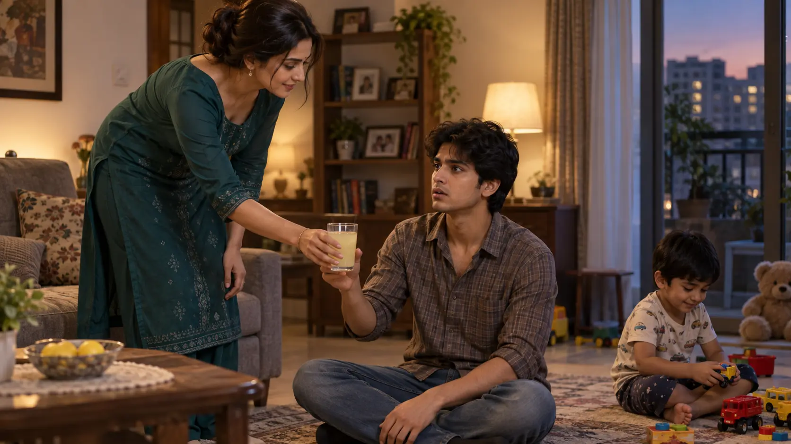
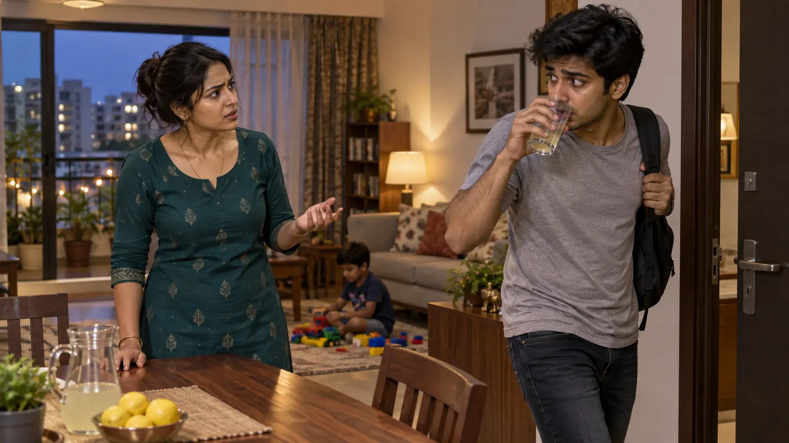

L142–145
The laugh disappearsA glass handoff turns suddenly uneasy. Faces carry the ambiguity without a voyeuristic angle.

GENERATED_PENDING_REVIEW · emotion-first framing · L142–145
Sequence: glass handoff → stunned silence → abrupt exit → Maami call · L142–158.
A glass handoff turns suddenly uneasy. Faces carry the ambiguity without a voyeuristic angle.

Dhika questions him; Chotu avoids the subject, gulps the drink and leaves.

Maami's account lets Dhika reinterpret Chotu's silence as family worry.

Source confirm nahi karta; Dhika khud cleavage, bra, ya “something more” ke beech unsure hai.
Fear aur excitement ek saath; woh apni reaction samajh nahi paati.
Woh “late” kehkar nikalta hai; actual reason stated nahi hai.
Sirf Dhika ko ek safer explanation milti hai; woh Chotu ke earlier reaction ko disprove nahi karti.
Dhika: delayed realization → uncertainty → fear/excitement → concern → a comforting explanation.
Chotu: playful → stunned and silent → evasive → abrupt exit.
| Pair | Part 8 delta |
|---|---|
| Dhika ↔ Chotu | First possible sexualized visibility; no acknowledgement or permission. |
| Dhika ↔ Maami | Practical payment call supplies a nonsexual explanation. |
| Range | Verified action |
|---|---|
| L142–145 | Bend, glass transfer, mood change, delayed realization. |
| L146–151 | Questions, silence/evasion, exit without money. |
| L152 | Cleavage/bra/more are Dhika's alternatives—not confirmed facts. |
Her hospitality and bend are ordinary actions. Her later excitement does not retroactively turn the event into permission.
Reader evidence: reaction. Dhika's belief: uncertain. Chotu's private knowledge: withheld. Maami's understanding: purely practical.
The escalation is psychological and secret: a new feeling appears, then Dhika suppresses it through rationalization.
Keep the awkward silence. The emotional beat depends on delayed realization and incomplete knowledge, not explicit visual description.
| Hook | Status |
|---|---|
| Does Chotu react? | YES—stunned and evasive. |
| What exactly did he see? | OPEN. |
| Will Dhika dismiss the experience? | OPEN into Part 9. |
Preserve ambiguity: describe reactions, not a definitive view.
Emotional sequence: confusion → fear/excitement → concern → rationalization.
Object continuity: Chotu has left; payment remains due; glasses are cleaned.
Next boundary: L159 begins at 8 PM with John still away.